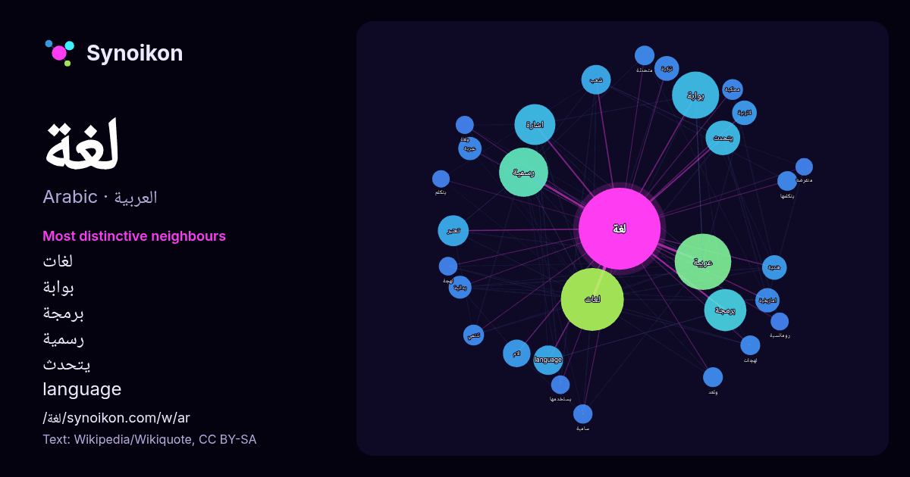

العربية · كلمة شائعة
لغة
“language” · الكلمات الموجودة حولها في 1883 ورودًا من ويكيبيديا, Wikiquote.

الجيران الأكثر تميّزًا
- لغات 81×
- بوابة 71×
- برمجة 59×
- رسمية 46×
- يتحدث 42×
- language 39×
- اشارة 29×
- امازيغية 24×
- بدائية 21×
- محكية 20×
- عربية 20×
- عبرية 19×
- يتكلمها 19×
- الام 19×
- متحدثة 18×
- لهجات 16×
- تعتبر 16×
- لاتينية 16×
- يستخدمها 15×
- ولغة 15×
× = كم مرة أكثر مما في نصوص ويكيبيديا العامة.
الجيران الأكثر تكرارًا
- لغات 182
- عربية 147
- رسمية 111
- بوابة 102
- برمجة 82
- اشارة 77
- يتحدث 55
- فرنسية 45
- تعتبر 44
- language 40
- شعب 40
- مجموعة 36
- الام 35
- قائمة 35
- قديمة 32
- معلومات 32
- اسم 31
- عالم 29
- موقع 29
- المانية 28
في السياق
- وبفعل العولمة لغةً دوليةً واسعة الانتشار. هي أكبر لغة في العالم من حيث عدد الناطقين، وثالث أكبر لغة في العالم من حيث عدد المتحدثين الأصليين بعد اللغتين Wikipedia snippets · اللغة الإنجليزية
- جزئيًا على التمييز التعسفي بين اللغات واللهجات، فاللغات الطبيعية تكون إما لغة منطوقة أو لغة الإشارة، ولكن يمكن ترميز أي لغة إلى وسائل الإعلام الثانوية باستخدام Wikipedia snippets · لغة
- بـ«اللغة العالية» وهي لغة شعرية خاصة بالإضافة للهجات محلية فاعتبروا تلك اللغة لغة رفيعة تظهر مدارك الشاعر وثقافته أمام الملك والرأي القائل أنها لغة قريش Wikipedia snippets · اللغة العربية
- تكون لغة معزولة، أيما لغة طبيعية ليست لها أية قرابة أو نسب إلى غيرها من اللغات، أي كل واحدة لم تثبت صلتها بأحد أصول اللغات المعروفة. "معلومات عن لغة معزولة Wikipedia snippets · لغة معزولة
- الفرنكوفونية، فتُستخدم الفرنسية أساسًا لغةً ثانيةً أو لغة تواصل مشترك (lingua franca)، على الرغم من أنها أصبحت لغة أم في بعض المناطق الحضرية المحدودة. وفي Wikipedia snippets · اللغة الفرنسية
- لغة النَأفِي لغة مصطنعة ابتكرها عالم اللغويات الأميركي بول فرومر وهو بروفيسور في جامعة كاليفورنيا الجنوبية واستخدمها المخرج والكاتب الكندي جيمس كاميرون Wikipedia snippets · لغة نأفي
- الآذرية التركية لقلة المتحدثين بها، و هي لغة تشبه لغة قوم التات والطالش الذين يسكنون مناطق نائية شمال إيران و أيضاً لغة أهل كيلان التي يتحدث بها 3 مليون إيراني Wikipedia snippets · اللغة الديلمية
- لغة الزغاوة أو بالتسمية المحلية لغة بيريا هي لغة صحراوية يتحدث بها شعب الزغاوة في شرق وسط تشاد وشمال غرب السودان (دارفور) و جنوب شرق ليبيا. يوجد ما بين Wikipedia snippets · لغة الزغاوة
كلمات أخرى
- أغنية
- إله
- تاريخ
- جبل
- جرس
- جزيرة
- جسر
- حديقة
- حصان
- حقيقة
- حياة
- خبز
- خريطة
- خريف
- ذهب
- زمن
- ساعة
- شاي
- شتاء
- صحة
- صحراء
- صمت
- صيف
- طبيعة
- طريق
- طعام
- ظل
- عائلة
- عاصفة
- عسل
- علم
- عمل
- غابة
- فن
- قطار
- قطة
- قلب
- قوة
- كلب
- ماء
- مال
- مدينة
- مرآة
- مطر
- ملح
- مناخ
- موت
- نجم
- والدة
حُسبت مسبقًا في 2026-10-09 بالإعدادات الافتراضية (±5 كلمات، مدوّنة متوسطة). يمكن للخريطة التفاعلية تحديثها ببيانات حية.
واجهة مترجمة آليًا؛ نرحب بالتصحيحات.